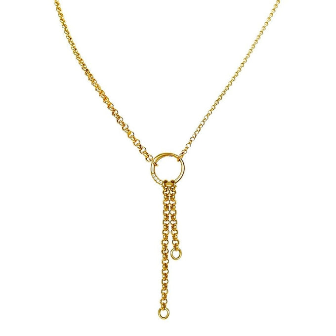
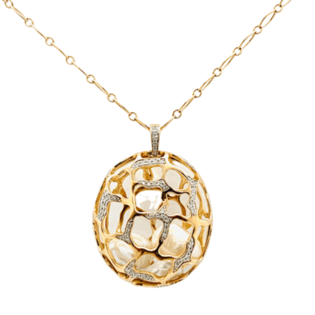
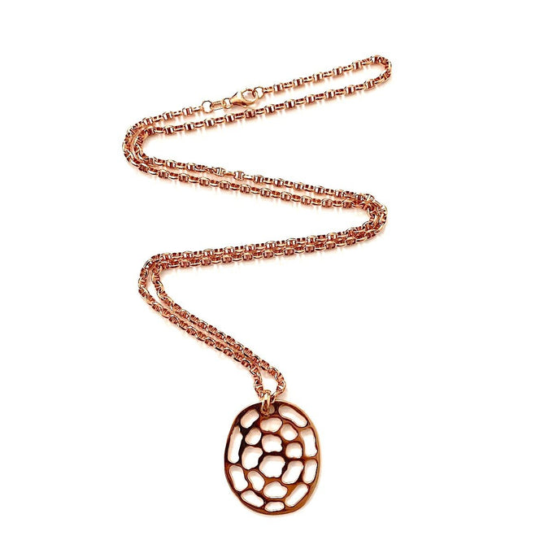
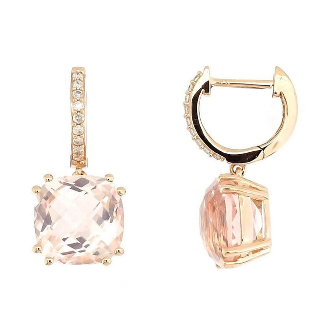
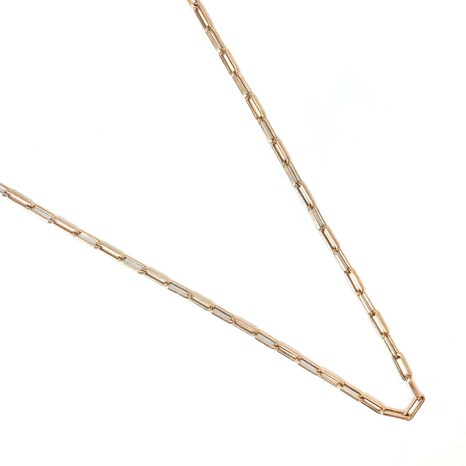
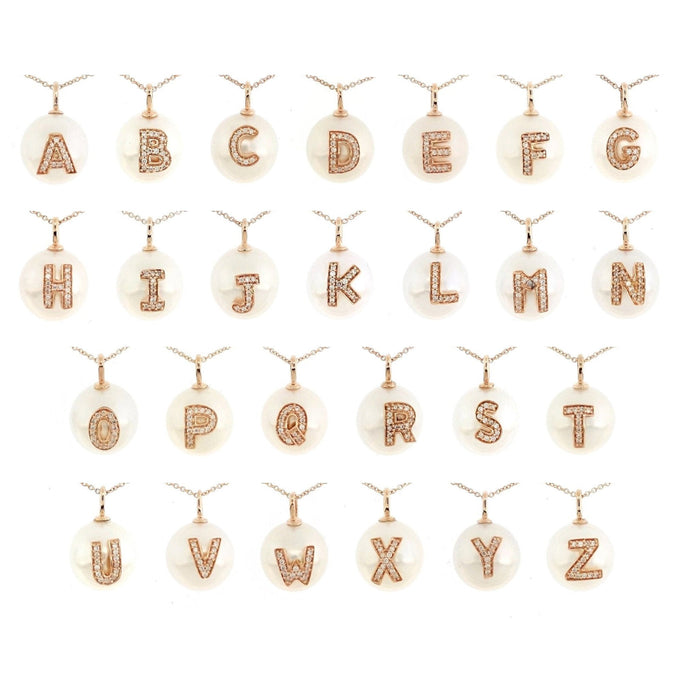
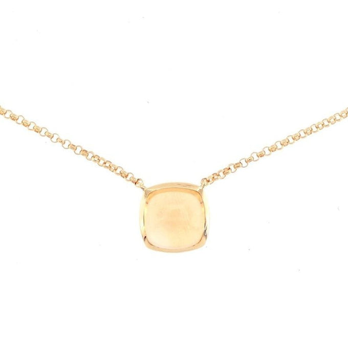

Seven prompts written natively for fine jewellery. Each is paired with a real Kura piece you can drop in as the reference image. Copy, attach the SKU, and run. The multi-image brand-lock pattern at the bottom is the one concept worth taking from this page.

silk cushion for black velvet to match the e-commerce look. Use any solitaire or pavé piece from the Diamond Jewellery page as @Image1.

pendant for ring or earring depending on the SKU. The diamond-droplet language is on-brand for Kura — keep it as is.
@Image1. The single highest-leverage prompt on this page because the multi-image input solves jewellery's #1 problem: product drift between frames.
@Image1 = side profile of the piece, @Image2 = front on velvet, @Image3 = macro of the clasp or stone setting. This is the prompt that shows the made-in-Italy / made-in-Hong-Kong craftsmanship instead of just claiming it in copy.

diamond ring for gemstone pendant for a Rock Candy variation.Memorize this shape and you can write your own from scratch:
Aim for 35-80 words. Below 35 → too vague, the video defaults to subtle drift. Above 80 → diminishing returns.
The single highest-impact line in any prompt is the camera movement. Verbs that work for jewellery:
dolly in, orbit 360, slow rotation, pull focus, macro track, crane down.
Seedance 2.0 accepts up to 9 reference images via the @Image1 / @Image2 / @Image3 tagging system.
It's worth understanding why this matters for jewellery specifically.
AI video models invent details they can't see clearly. With only one reference, the model has to guess what the unseen sides of the piece look like, so across a 10-second clip the ring reshapes, the stone changes colour, prongs appear and disappear, and the clasp drifts. None of that is okay for a fine jewellery brand where customers pay for the exact piece they see.
Feeding the model 2-3 clear, high-resolution views of the same SKU gives it enough information to keep the piece visually identical from the first frame to the last. The environment, lighting, and camera move are free to change. The product is not.
| Reference slot | What to put there |
|---|---|
@Image1 | The actual SKU from kurajewellery.com. Clean front-on shot, white or velvet background, high resolution. This is the most important one. |
@Image2 | A second clear angle of the same piece — side profile or three-quarter view. Helps the model understand the 3D shape, not just one face. |
@Image3 | A macro detail: the stone clarity, gold finish, or clasp construction. Pins down the texture so the model doesn't smooth it into something generic. |
The cleaner and sharper each reference, the better the result. Blurry or low-resolution references are worse than no reference at all because they teach the model to render the piece blurry too.